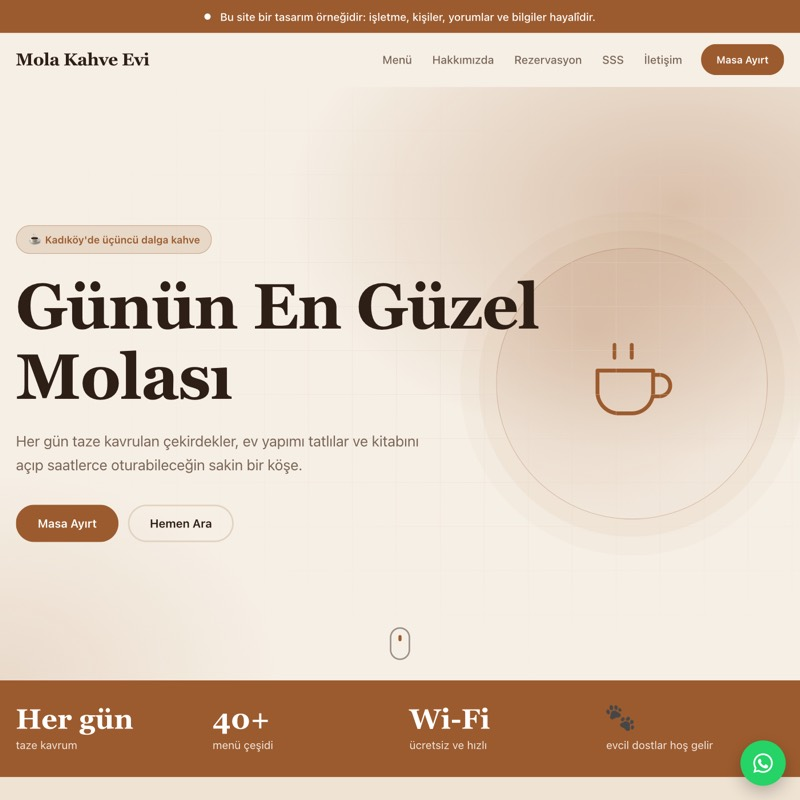

İstanbul'da yaşayan bir frontend geliştiriciyim. Temiz arayüzler, akıcı animasyonlar ve her ekranda düzgün görünen sayfalar üzerine çalışıyorum; tasarımla kodun buluştuğu yer en sevdiğim alan.
Çevremdeki pek çok spor salonunun, kafenin ve kuaförün güçlü bir Instagram hesabı olduğu hâlde bir web sitesi olmadığını fark ettim. Bu ihtiyaç için tek bir ayar dosyasıyla özelleşen bir site motoru geliştirdim. Böylece her işletmeye birkaç gün içinde, uygun maliyetle ve kendine özgü bir site hazırlayabiliyorum.
Kullandığım başlıca teknolojiler HTML, CSS, JavaScript, React, React Native ve Python. Serbest projelerin yanı sıra ekip içi frontend pozisyonlarına da açığım — bana yazabilirsiniz.

İşletme Site Şablonu
Küçük işletmeler için tek motorla sınırsız site üreten statik site üreticisi. 3 düzen, 8 tema, 20'den fazla bölüm; canlı açık/kapalı saati, WhatsApp randevu kutusu ve Google için yapılandırılmış veri.
- Python
- JavaScript
- CSS
- HTML

Papatya Çiçek Atölyesi
Kemer formlu görseller, kategoriye göre filtrelenen galeri ve sipariş kutusu.
- Filtreli galeri
- Sipariş

Mola Kahve Evi
Kategorili, fiyatlı menü ve WhatsApp üzerinden masa rezervasyonu.
- Menü
- Rezervasyon

Nefes Yoga
Haftalık ders programı, paketler ve deneme dersi randevusu.
- Ders programı
- Paketler
Bir işletme sitesinin güzel görünmesi yetmez; müşteri getirmesi gerekir. Hazırladığım her sitede şunlar standart olarak gelir:
Her ekranda kusursuz
Telefon, tablet ve bilgisayarda hızlı açılır.
WhatsApp'tan randevu
Hizmet ve gün seçilir, mesaj hazır gelir.
Canlı açık / kapalı
Çalışma saatlerine göre anlık güncellenir.
Google'da görünürlük
Arama motorlarının anladığı işletme verisi.
Basit, şeffaf ve onayınız olmadan hiçbir şeyin yayına çıkmadığı bir süreç.
- Ücretsiz
Tanışma
İşletmenizi ve sitede ne görmek istediğinizi konuşuyoruz.
- 1–3 gün
Taslak
Instagram'ınızdaki fotoğraf ve bilgilerle size özel bir önizleme hazırlıyorum.
- Birlikte
Düzeltmeler
Her detayı birlikte netleştiriyoruz.
- Sürekli
Yayın ve destek
Alan adınıza bağlıyor, Google'a tanıtıyorum; değişiklikleri aynı gün yapıyorum.
Birlikte çalışalım
İşletmeniz için bir web sitesi ya da ekibiniz için bir frontend geliştirici arıyorsanız kısa bir mesaj yeterli. Genellikle aynı gün dönüyorum.
© 2026 Emircan Karaman. Bu site şablon kullanılmadan, elle kodlandı. GitHub